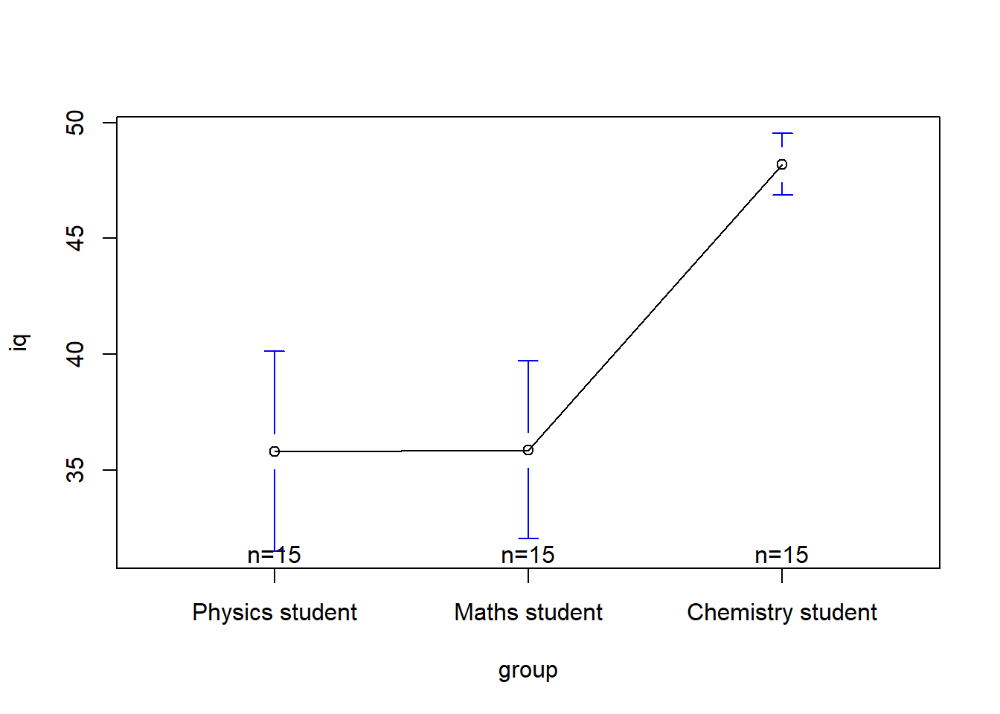
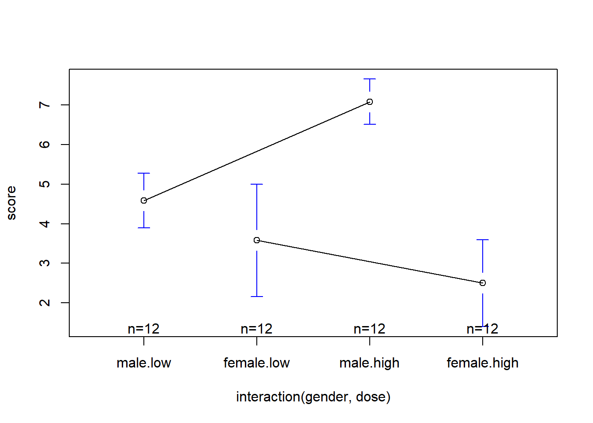

Selle praktikumi eesmärgiks on läbi teha järgmised tegevused:
Laadige alla praktikumi andmed.
Andmefail “iqdata”. Tegemist on simuleeritud andmestikuga, kus muutujateks on eriala, IQ skoor ning vanus. Andmestiku allikas: http://staff.bath.ac.uk/pssiw/stats2/page16/page16.html
Kuidas jaotuvad IQ skoorid? Tehke histogramm ja arvutage asümmeetriakordaja ning ekstsess.
Kui palju andmeid/vastajaid on igas grupis (muutuja nimega “group”)?
Arvutage iga grupi keskmine IQ tulemus.
Tehke histogramm, kus on gruppide tulemused kuvatud eraldi.
R-is on ANOVA tegemiseks mitmeid erinevaid funktsioone:
Need funktsioonid kasutavad erinevaid meetodeid ruutude summa arvutamiseks ja seetõttu võivad anda natuke erinevaid tulemusi (rohkem infot selle teema kohta leiate lehelt - https://www.r-bloggers.com/anova-%E2%80%93-type-iiiiii-ss-explained/). Need funktsioonid võivad erineda ka kasutamise poolest. Näiteks osade funktsioonide puhul peab korduvmõõtmistega andmestiku enne analüüsimist agregeerima.
Soovitan Teil ANOVA arvutamiseks kasutada paketi “ez” funktsiooni ezAnova(). Seda funktsiooni on lihtne kasutada ja see annab sarnase väljundi SPSS’iga tehtud analüüsile. Selle funktsiooni puhul saab ka kergesti muuta ruutude summa arvutamise meetodit. Selle funktsiooni puhul ei pea korduvmõõtmistega andmestikku enne analüüsimist agregeerima.
Selle funktsiooni kasutamiseks installeerige endale moodul “ez”:
install.packages("ez")Aktiveerige RStudios see moodul, et saaksite kasutada seal olevaid funktsioone.
library(ez)Sageli hõlmavad eksperimentaalsed uuringud enam kui kahe grupi või tingimuse võrdlusi. Näiteks võib ravimiuurijaid huvitada, kas (a) ravim on parem kui platseebo ning (b) kui suur doos ravimit on parima mõjuga? Tihtipeale võrreldakse sellistes olukordades nt kolme gruppi – platseebot saanud, madala ning kõrge doosiga eksperimentaalsed rühmad.
Mitme grupi võrdlemisel saab kasutada dispersioonanalüüsi.
(Parameetrilise) ANOVA läbiviimiseks on mitmed eeldused:
Vaatame, kuidas teha ühesuunalist ANOVA’t “ez” paketiga.
Tavalise ühesuunalise ANOVA puhul kasutatakse järgmisi argumente:
ezANOVA(
data = andmestiku nimi,
dv = sõltuv muutuja,
wid = veerg, kus on katseisiku tunnus,
between = sõltumatu muutuja,
type = 3 # ruutude summa arvutamise meetod
)Andmestiku “iqdata” puhul:
iq_anova <- ezANOVA(data = iqdata,
dv = iq,
wid = subject,
between = group,
type = 3,
detailed = TRUE)
print(iq_anova)## $ANOVA
## Effect DFn DFd SSn SSd F p p<.05
## 1 (Intercept) 1 42 71840.089 1604.533 1880.47432 1.657565e-36 *
## 2 group 2 42 1529.378 1604.533 20.01637 7.843384e-07 *
## ges
## 1 0.9781532
## 2 0.4880093
##
## $`Levene's Test for Homogeneity of Variance`
## DFn DFd SSn SSd F p p<.05
## 1 2 42 113.6444 874.6667 2.728506 0.07690009ANOVA tulemus on väljundis esimesel kohal. Sealt leiame vastuse küsimusele, kas gruppide vahel on statistiliselt olulised erinevused või mitte. Kui p < .05 on meie mudel statistiliselt oluline ning edasi tasub vaadata post hoc teste, et välja selgitada, kus täpsemalt on erinevus(ed). Veerus nimega “ges” on ära tood ka efekti suurus – generalized eta squared (.02 – väike; .13 – keskmine; .26 – suur).
Post-hoc testid
ANOVA näitab, kas esineb gruppide vahelisi erinevusi, kuid ei näita, milliste gruppide vahel need erinevused on. Nende erinevuste uurimiseks peame tegema veel lisaks post-hoc testid. Selleks saame kasutada funktsiooni pariwise.t.test:
pariwise.t.test(y, x, p.adju = …), kus y on sõltuv muutuja, x on sõltumatu muutuja; argumendiga p.adju saame määrata meetodi p-väärtuse korrektsiooni arvutamiseks (see funktsioon võimaldab kasutada järgmisi meetodeid: “holm”, “hochberg”, “hommel”, “bonferroni”, “BH”, “BY”, “fdr”, “none”).
pairwise.t.test(iqdata$iq, iqdata$group, p.adj = "holm")##
## Pairwise comparisons using t tests with pooled SD
##
## data: iqdata$iq and iqdata$group
##
## Physics student Maths student
## Maths student 0.98 -
## Chemistry student 6.3e-06 6.3e-06
##
## P value adjustment method: holmJoonis
library(gplots)
plotmeans(iq~group, data=iqdata)
ANOVA mitteparameetriliseks analoogiks on Kruskall-Wallise test. Selle analüüsi tegemiseks saame kasutada funktsiooni kruskal.test(): kruskal.test (y ~ x, data = andmed), kus y on sõltuv muutuja ja x on sõltumatu muutuja.
kruskal.test(iq ~group, data = iqdata) ##
## Kruskal-Wallis rank sum test
##
## data: iq by group
## Kruskal-Wallis chi-squared = 29.205, df = 2, p-value = 4.552e-07Nüüd peame ka post-hoc testide puhul kasutama mitteparameetrilist testi (Mann-Whitney U test). R-is saame seda teha funktsiooniga pairwise.wilcox.test:
pairwise.wilcox.test(y, x), kus y on sõltuv muutuja ja x on sõltumatu muutuja.
pairwise.wilcox.test(iqdata$iq, iqdata$group, p.adj = "holm") ## Warning in wilcox.test.default(xi, xj, paired = paired, ...): cannot
## compute exact p-value with ties
## Warning in wilcox.test.default(xi, xj, paired = paired, ...): cannot
## compute exact p-value with ties
## Warning in wilcox.test.default(xi, xj, paired = paired, ...): cannot
## compute exact p-value with ties##
## Pairwise comparisons using Wilcoxon rank sum test
##
## data: iqdata$iq and iqdata$group
##
## Physics student Maths student
## Maths student 0.84 -
## Chemistry student 9.7e-06 9.7e-06
##
## P value adjustment method: holmKuidas aga lahendada olukorda, kus on mitu erinevat sõltumatut muutujat, millel omakorda on mitu taset? Sellist olukorda võiks näitlikustada ravimiuuringuga, kus vaadatakse kahe erineva ravimi mõju kahe erineva doosiga. Saaksime järgneva uuringu ülesehituse: 2 (ravim 1, ravim2) x 2 (madal doos, kõrge doos) eksperiment. Eeltoodud kujul raporteeritakse tihtipeale faktoriaalset eksperimenti.
Faktoriaalse lahenduse puhul saab rääkida peaefekti(de)st ja interaktsioonist (koosmõjust ). Eeltoodud näite puhul tähendab peaeefekt seda, et nt ainult ravimitüübist oleneb, kas ravil on efekti või ei – seevastu ravimi doos ei ole oluline; realistlikum on ehk teistpidi – doos on oluline, ent ravimitüüp mitte. Interaktsioon tähendab aga nt seda, et ravimite efektiivsus sõltub doosist – nt ravim1 on efektiivne siis, kui doos on kõrge, ravim2 on aga efektiivne siis, kui doos on madal.
Kasutame andmefail “drugtrial”. Tegemist on simuleeritud ravimiuuringu andmestikuga, mis sisaldab muutujatena uuritava identifitseerimisindeksi, sugu, ravimi annust ning ravijärgset skoori. Andmestiku allikas: http://staff.bath.ac.uk/pssiw/stats2/page16/page16.html
Faktoriaalse ANOVA puhul kasutatakse järgmisi argumente:
ezANOVA(
data = andmestiku nimi,
dv = sõltuv muutuja,
wid = veerg, kus on katseisiku tunnus,
between = c(esimene sõltumatu muutuja, teine sõltumatu muutuja),
type = 3 # ruutude summa arvutamise meetod
)Andmestiku “drugtrial” puhul:
drug_anova <- ezANOVA(data = drugtrial,
dv = score,
wid = subject,
between = c(gender, dose),
type = 3)
print(drug_anova)## $ANOVA
## Effect DFn DFd F p p<.05 ges
## 2 gender 1 44 37.493546 2.223837e-07 * 0.46007994
## 3 dose 1 44 2.413819 1.274327e-01 0.05200648
## 4 gender:dose 1 44 15.443432 2.967220e-04 * 0.25980048
##
## $`Levene's Test for Homogeneity of Variance`
## DFn DFd SSn SSd F p p<.05
## 1 3 44 7.229167 37.08333 2.859176 0.04762463 *Post-hoc testid
Enne Post-hoc testide arvutamist peaksime siinkohal vaatama üle, missuguseid gruppe me tahaksime omavahel võrrelda. Me saame kahe sõltumatu muutuja kombineerimisel 4 gruppi: female high, female low, male high, male low. Nende gruppide võrdlemiseks peaksime tegema andmetesse ühe lisaveeru, kus on kõik kombinatsioonid olemas. Selle saame teha funktsiooni paste() abil.
drugtrial$dummy <- paste(drugtrial$gender, drugtrial$dose)pairwise.t.test(drugtrial$score, drugtrial$dummy, p.adjust = "holm")##
## Pairwise comparisons using t tests with pooled SD
##
## data: drugtrial$score and drugtrial$dummy
##
## female high female low male high
## female low 0.2000 - -
## male high 4.8e-08 1.2e-05 -
## male low 0.0070 0.2000 0.0014
##
## P value adjustment method: holmJoonis
library(gplots) # enne tuleb pakett arvutisse insatalleerida
plotmeans(score~interaction(gender,dose), data=drugtrial, connect=list(c(1,3,5),c(2,4,6)))
Korduvmõõtmiste ANOVA (Repeated measures ANOVA) on sarnane tavalise ANOVA-ga (One Way ANOVA). Tavalise ANOVA-ga võrdlesime erinevusi sõltumatute gruppide vahel. Korduvmõõtmiste ANOVA-ga saame võrrelda erinevusi sõltuvate gruppide korral. Eksperimentaalpsühholoogias kohtab seda analüüsi üsna sageli, sest eelistatakse kasutada katsedisaine, kus kõik katseisikud teevad kõik tingimused läbi (sõltuvate gruppidega katsedisain).
Kasutame andmefaili “recalldata”. Selles katses esitati inimestele erinev emotsionaalse väärtusega sõnu ja paluti neid hiljem meenutada. Näeme andmestikus, et iga katseisik on läbinud kõik katsetingimused („Pos“ – positiivse tähendusega sõnad, „Neg“ – negatiivse tähendusega sõnad, „Neu“ – neturaalse tähendusega sõnad).
Vaatame, kas nende tingimuste puhul erines meenutamiste arv.
Korduvmõõtmiste ANOVA puhul kasutatakse järgmisi argumente:
ezANOVA(
data = andmestiku nimi,
dv = sõltuv muutuja,
wid = veerg, kus on katseisiku tunnus,
within = sõltumatu muutuja,
type = 3 # ruutude summa arvutamise meetod
)Andmestiku “recalldata” puhul:
recall_anova <- ezANOVA(data = recalldata,
dv = score,
wid = subject,
within = condition,
type = 3)
print(recall_anova)## $ANOVA
## Effect DFn DFd F p p<.05 ges
## 2 condition 2 58 14.36539 8.558285e-06 * 0.2693313
##
## $`Mauchly's Test for Sphericity`
## Effect W p p<.05
## 2 condition 0.9973646 0.9637292
##
## $`Sphericity Corrections`
## Effect GGe p[GG] p[GG]<.05 HFe p[HF]
## 2 condition 0.9973715 8.757373e-06 * 1.070945 8.558285e-06
## p[HF]<.05
## 2 *Post-hoc testid
Antud andmete puhul peame kasutama sõltuvate gruppidega t-teste, sest kõik katseisikud läbisid kõik katsetingimused. Selle testi tegemiseks kasutame funktsiooni pairwise.t.test(), aga seekord lisame argumendi “paired=TRUE”: pairwise.t.test(y,x,paired=TRUE), kus y on sõltuv muutuja ja x on sõltumatu muutuja.
pairwise.t.test(recalldata$score, recalldata$condition, paired = TRUE)##
## Pairwise comparisons using paired t tests
##
## data: recalldata$score and recalldata$condition
##
## Neg Neu
## Neu 4.8e-05 -
## Pos 0.0037 0.0627
##
## P value adjustment method: holmKasutage andmestikku “maad”.
1. Lisage andmetesse uus muutuja, mis jaotab maad SKP alusel kolme gruppi: madal, keskmine, kõrge. Rühmitame andmeid nn. kvantiilide meetodil, mis tagab, et igasse rühma satub võrdne arv riike. Kasutage selleks allolevat koodi:
maad$SKP_grupid = NA # loome andmetesse uue veeru
# Arvutame 0,33 ja 0,66 kvantiili väärtused
quantile(maad$SKP, na.rm = TRUE, probs = c(0.33, 0.66))## 33% 66%
## 14.9364 31.1124#lisame loodud veergu väärtusi:
# kõik riigid, mille SKP on alla 0,33 kvantiili kodeeritakse väärtusega "1"
maad$SKP_grupid[maad$SKP < 14.9364] = "1"
# kõik riigid, mille SKP on üle 0,33 kvantiili ja alla 0,66 kvantiili kodeeritakse väärtusega "2"
maad$SKP_grupid[maad$SKP > 14.9364 & maad$SKP < 31.1124] = "2"
# kõik riigid, mille SKP on üle 0,66 kvantiili kodeeritakse väärtusega "3"
maad$SKP_grupid[maad$SKP > 31.1124] = "3"Võrrelge PISA testi tulemusi saadud gruppide lõikes. Tehke ka post-hoc testid ja joonis.
Lisage andmetesse uus muutuja, mis jaotab maad demokraatia indeksi põhjal kahte gruppi: alla keskmise, üle keskmise. Kasutage selleks allolevat koodi:
maad$dem_grupid = NA # loome andmetesse uue veeru
#lisame loodud veergu väärtusi:
#kõik riigid, mille demokraatia indeks on alla keskmise kodeeritakse väärtusega "1"
maad$dem_grupid[maad$demokraatia_indeks < mean(maad$demokraatia_indeks,na.rm =TRUE)] = "1"
#kõik riigid, mille demokraatia indeks on võrdne või üle keskmise kodeeritakse väärtusega "2"
maad$dem_grupid[maad$demokraatia_indeks >= mean(maad$demokraatia_indeks,na.rm =TRUE)] = "2"Tehke kahe faktoriga ANOVA, kus sõltuvaks muutujaks on PISA test ja sõltumatuteks muutujaktes regioon ning demokraatia indeksi alusel loodud grupid.
Tehke eelmise ülesande põhjal post-hoc testid ja joonis.